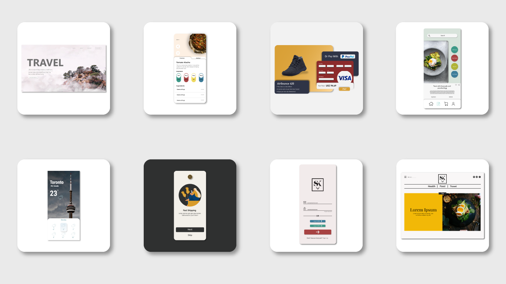
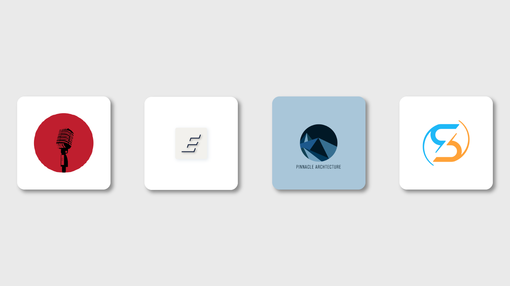

Context
This was a Student project prompted by the United Nations 10th sustainable development goal: reduced inequalities. Given the Impact that the COVID-19 pandemic had on food security in Ontario, including food shortages and increased prices our team sought to focus on how we could improve accesibility to food resources through a digital medium. This meant understanding audience needs and how we could align them with local community organizations capabilities while improving awareness and access to resources.
The Challenge
The problem our team aimed to tackle was three-fold. The first is to be an organization driven in pursuit of one of the United Nations Sustainable Development Goals (SDG). The team's current focus is SDG 10: Reduced Inequalities. This SDG calls for reducing inequalities in a variety of faculties. The second piece is the inequality in particular targeted; food insecurity in the Tri-city area: Waterloo, Kitchener, and Cambridge. While researching food insecurity, the team quickly realized its gargantuan nature and decided to narrow its focus to a smaller region. The centre of the tri-cities food assistance programs is an initiative called The Community Food Assistance Network; a system that organizes 100+ community programs and agency partners to provide food and other vital supports to those who need it. Approximately 18% of the community population accessed some faculty of the network, having distributed 4.7 million pounds of food. Finally, while it is clearly an issue for a significant portion of the population, there is still a disconnect between families facing the inequality of food insecurity, yet not receiving help due to personal and accessibility barriers.
Solution Overview
The solution is a digital platform available on mobile devices that provides users with information about and access
to their local food bank. This will allow users to circumvent some of the existing barriers to both increase efficacy
and access to existing services allowing for a wider range of individuals to be better assisted. Another benefit of this
application is the information it provides food banks as well. The information and data tracked through the application
help food banks understand which products and services are needed the most and take the necessary steps needed to adhere
to the demands and needs of the food bank users. Lastly, we found that many of our target users require more than simply
food bank services and because of this we embedded access to information about additional resources available in the local
community related to food insecurity.
When researching barriers to food assistance accessibility, one of the most significant reasons as barriers to accessing
information, accounting for 47% of eligible recipients who need and should use food banks not utilizing the service.
The report by the University of Toronto Department of Nutritional Science examined these barriers and concluded a significant
lack of efficacy when analyzing the performance of food banks. This area's biggest rationale for the creation of the Basket
service. By providing a solution that increases access and information regarding food assistance services, the Basket’s
core purpose is the pursuit of eliminating these barriers. Furthermore, when looking at the barrier of choice, a significant
portion of rationales articulate a similar idea: a lack of agency for food assistance participants. This is a secondary
goal of the Basket solution. By providing features that enable greater individual agency (i.e., request features and contact
forms) the Basket aims to in tandem affect the additional barrier surrounding personal choice.
Additionally, while demographics amongst food assistance recipients are varied, one common element found was access to a mobile
smartphone and public internet connection. Understanding that this is one of the few tools affording this inequality afflicted
demographic, the decision to make an app was pushed as an effective channel to push the tool.
Building Empathy
Target Markets Currently, our target market is limited to the location scope; focusing specifically on the Regional Municipality of Waterloo. Also known as the KWC (Kitchener, Waterloo, Cambridge) or Tri-Cities. While there may be resources we utilize from outside our area of interest (i.e., the federal government), the majority of work will be initially done within this region. This serves as an initial gauge, allowing for the team to introduce their solution to a manageable set while also granting the ability to gather valuable business and consumer insights. These understandings will be invaluable as the team continues to scale and streamline operations. Food bank and assistance program recipients will be Basket’s initial market segment. In Canada, food bank visits in 2021 experienced a 20.3% rise in visits compared to the two previous years. Visits totaled 1,303,997 people, with 434,281 being children. In Ontario the total number of visits was 419, 532, 130,970 being children. Food bank user statistics in Canada at a glance encompass 33.3% of children (while representing only 19.1% of the population), 46.1% are single adult households, and 50.5% are on social assistance or disability-related supports. Those receiving provincial social assistance as their main source of income support represent 50.5% of households accessing food banks (Hunger Count 2021 Report). Specific to the Waterloo region, more than 33,000 people accessed some kind of food assistance in 2021 (CBC News, 2021). 51% of individuals receiving food assistance are single, followed by single-parent families (19%), two-parent families (17%), couples with no children (6%) and others (7%). 4% of individuals who access food banks are seniors, with 11% of them accessing emergency food hampers 12+ times a year. This demographic is a significant portion of the Waterloo region population, an analysis from The Food Bank of Waterloo Region reports one in every twenty households has utilized these services. They estimate the current number of individuals served by the regions provided programs totals 34,620 men, women, and children. Figure 1 demonstrates the complex and varied nature of food assistance recipients. One common factor, however, is the majority of individuals receiving these services are repeat customers, with a Waterloo Region food assistance impact report listing over 50% having 3-8+ program visits. Our target market, therefore, is individuals in the KWC region who are in need of some kind of food assistance regardless of gender or age. Food Assistance Program Provider The Food assistance program providers are Basket’s next market segment as well as the second half primary target market. The Waterloo region provides food to a large number of individuals, doing this through a wide expansive network. Dubbed “The Community Assistance Network '' the region boasts a system of 100+ community programs and agency partners that facilitates the delivery of food and other various vital supports. Through a partnership with this organization, the Basket will be able to reach all food assistance programs in the region and allow for market infiltration.
Building a Brand
Understanding User Flows
User Testing
Design